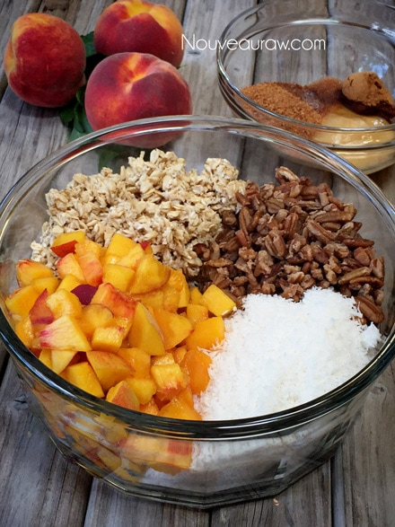
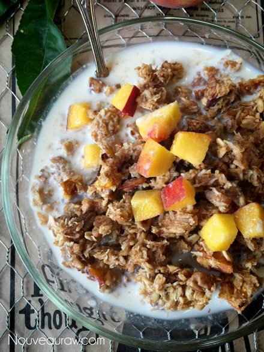

Pecan Peach Granola

~ raw, vegan, gluten-free ~
When I created this recipe for Pecan Peach Granola, I pondered a bit on what flavors would meld together in my mouth. I searched through my pantry to see what ingredients I had on hand and came up with this recipe.
The flavor combination of hardy oats, fresh sweet peaches, pecans… oooh pecans. How to describe them? Nuts, in general, can be difficult to describe. Crunchy, slightly sweet and nutty. That doesn’t quite paint the whole picture.
Imagine eating a pecan pie at the Thanksgiving table (if you haven’t had pecan pie before… this won’t work for you :). With that image in mind, now imagine just eating the top layer of the pie, where the nuts are. With me so far? Now imagine washing off all the sugar and seasonings being left with just the nuts to eat. That’s sort of the taste you get when you eat a pecan.
Here’s a fun fact…
Ever wonder how many pecans it would take to fill an Olympic-sized swimming pool? Yea, I can’t say that I have ever really given it any thought, BUT it would take 144 million to be exact! I promise I didn’t make that up. :)
I created and shared this recipe with you back on July 5th, 2011. But today, Aug. 9th, 2015, I updated this post with new photos and tested them out using fresh peaches rather than dried ones as I first did in the original recipe. Not because I didn’t like it with the dried peaches, just because I had fresh on hand and wanted to make this granola for some friends visiting us. It’s all about having options. :)
Yields about 8-10 cups
- 2 cups raw, gluten-free oats, soaked
- 1 1/2 cups raw pecans, soaked
- 1 1/4 cups shredded coconut, unsweetened
- 1 1/2 cups dried peaches, soaked and diced
- 2 Tbsp cold-pressed raw coconut oil, melted
- 1/4 cup raw honey
- 1/4 cup raw coconut crystals
- 2 tsp ground Ceylon cinnamon
- 1/2 tsp Himalayan pink salt
- 1/4 tsp ground nutmeg
- 1 tsp vanilla extract
Preparation:
- After soaking the pecans, drain and give them a quick rinse when you are ready to use them.
- Same goes for the oats; they will take a bit to rinse.
- Place them in a colander and as you run water over them, agitate them with your fingers to speed up the rinse time.
- Hand squeeze as much excess water from them as possible.
- In a large bowl combine; oats, pecans, coconut, and dried peaches. Set aside.
- In a small bowl combine; honey, raw coconut crystals, cinnamon, nutmeg, and vanilla. Mix well and pour over the dry ingredients, mixing until everything is well coated. I used my hands for this process.
- To make this recipe vegan, replace the honey with another liquid sweetener.
- Spread out on the non-stick teflex sheets that come with the dehydrator and dry at 145 degrees (F) for 1 hour then reduce to 115 degrees (F) for about 24 hrs.
- Dry times will always vary depending on how much of the water you squeezed out of the oats. The climate that you live in will also be a determining factor. If you are using fresh peaches, it could take longer as well.
- Store in an airtight glass container on the counter for about 2 weeks. Place in fridge or freezer to extend the shelf life (up to a month).
The Institute of Culinary Ingredients:
- Raw Coconut Crystals add a “brown sugar” flavor to a recipe. Read about it (here).
- Honey isn’t vegan, but I use it occasionally. Click (here) to read why.
- What is Himalayan pink salt and does it really matter? Click (here) to read more about it.
- Are oats gluten-free? Yes, read more about that (here).
- Are oats raw? Yes, they can be found. Click (here) to learn more.
- Do I need to soak and dehydrate oats? Not required but recommended. Click (here) to see why.
Culinary Explanations:
- Why do I start the dehydrator at 145 degrees (F)? Click (here) to learn the reason behind this.
- When working with fresh ingredients, it is important to taste test as you build a recipe. Learn why (here).
- Don’t own a dehydrator? Learn how to use your oven (here). I do however truly believe that it is a worthwhile investment. Click (here) to learn what I use.


© AmieSue.com